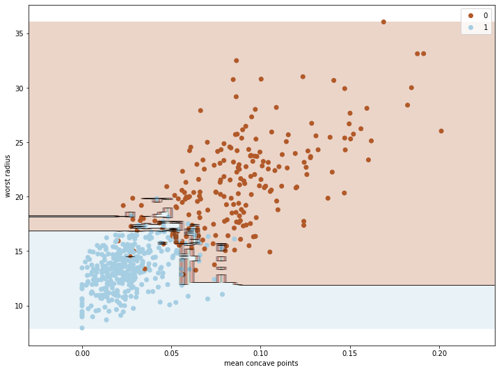

โดย ชิตพงษ์ กิตตินราดร | มกราคม 2563
Random forest เป็นหนึ่งในกลุ่มของโมเดลที่เรียกว่า Ensemble learning ที่มีหลักการคือการเทรนโมเดลที่เหมือนกันหลายๆ ครั้ง (หลาย Instance) บนข้อมูลชุดเดียวกัน โดยแต่ละครั้งของการเทรนจะเลือกส่วนของข้อมูลที่เทรนไม่เหมือนกัน แล้วเอาการตัดสินใจของโมเดลเหล่านั้นมาโหวตกันว่า Class ไหนถูกเลือกมากที่สุด
ภาพโดย นฤมล กิตตินราดร
ฟังดูเหมือนไม่น่าจะดี แต่ในความเป็นจริงแล้ว กลไกการรวมการตัดสินใจของผู้ตัดสินใจจำนวนมากเข้าด้วยกันมักจะให้ผลการตัดสินใจที่แม่นยำมากกว่าการพึงพาการตัดสินใจจากแหล่งเดียว ปรากฏการณ์นี้เป็นจริงในหลายมิติ เช่นในทางสังคม เราเรียกว่า "ปัญญาของฝูงชน" (Wisdom of the crowd) ซึ่งหากสนใจสามารถค้นคำนี้อ่านได้ทั่วไป
การเรียนรู้แบบ Ensemble นี้จะทำงานได้ดีบนเงื่อนไขที่ว่า โมเดลผู้ทำนายแต่ละตัวจะต้องเรียนรู้อย่างเป็นอิสระต่อกันให้มากที่สุด เหมือนกับเงื่อนไขของปัญญาของฝูงชน ว่าคนแต่ละคนจะต้องตัดสินใจด้วยตนเองให้มากที่สุดโดยไม่ได้รับข้อมูลจากคนอื่นหรือนำเอาข้อมูลจากคนอื่นมาเป็นส่วนในการตัดสินใจ
ใน Machine learning algorithm เรามีวิธีการที่ทำให้การตัดสินใจของแต่ละโมเดลเป็นอิสระต่อกัน โดยการใช้ Algorithm เดียวกัน แต่ให้แต่ละ Instance เรียนรู้จากส่วนของข้อมูลที่ไม่เหมือนกันโดยใช้การสุ่มเลือก กลไกนี้เรียกว่า Bagging และ Pasting โดยสิ่งที่ต่างกันคือ Bagging สามารถสุ่มเลือกข้อมูลรายการเดียวกันได้ แต่ Pasting ไม่อนุญาตให้สุ่มรายการซ้ำกันได้เลย ในทางปฏิบัติ Bagging จะลด Variance ของโมเดลได้ดีกว่า เพราะมีการเลือกรายการข้อมูลซ้ำ ทำให้ได้โมเดลที่เสถียรกว่าและมักจะแม่นยำกว่า Pasting
สำหรับ scikit-learn โมเดลแบบ Bagging จะจะใช้วิธีการสุ่มเลือกรายการข้อมูลแบบ Bootstrap โดยแต่ละ Instance จะเลือก 63% ของข้อมูล เหลือ 37% ที่แต่ละ Instance ไม่เห็น เราเรียก 37% นี้ว่า Out-of-bag (oob) instance การที่มี oob instance ทำให้เราสามารถประเมินความแม่นยำเฉลี่ยของทุกๆ Instance ได้ในระหว่างเทรน โดยการเรียก Argument oob_score=True ใน Classifier instance
เมื่อเข้าใจหลักการทำงานแล้ว มาลองสร้างโมเดลกันเลยดีกว่า โดยครั้งนี้เราจะเลือกชุดข้อมูลที่ยากและซับซ้อนขึ้นเล็กน้อย คือชุดข้อมูล Breast cancer wisconsin (diagnostic) dataset ซึ่งวัดค่าต่างๆ จากตัวอย่างก้อนเนื้อที่เจาะออกมา แล้วจำแนกว่าก้อนเนื้อนั้นเป็นเซลมะเร็งเต้านมหรือไม่
ข้อมูลมี 30 Feature ได้แก่ ['mean radius' 'mean texture' 'mean perimeter' 'mean area' 'mean smoothness' 'mean compactness' 'mean concavity' 'mean concave points' 'mean symmetry' 'mean fractal dimension' 'radius error' 'texture error' 'perimeter error' 'area error' 'smoothness error' 'compactness error' 'concavity error' 'concave points error' 'symmetry error' 'fractal dimension error' 'worst radius' 'worst texture' 'worst perimeter' 'worst area' 'worst smoothness' 'worst compactness' 'worst concavity' 'worst concave points' 'worst symmetry' 'worst fractal dimension'] โดยมีจำนวน 569 รายการ จำแนกเป็น Malignant คือเป็นเซลมะเร็ง 212 รายการ และ Benign คือไม่เป็นมะเร็ง 357 รายการ
เราสามารถเรียกข้อมูลชุดนี้จาก sklearn.datasets ได้เลย:
import numpy as np
import matplotlib.pyplot as plt
from sklearn import datasets
from sklearn.model_selection import train_test_split
from sklearn.preprocessing import StandardScaler
from sklearn.tree import DecisionTreeClassifier
from sklearn.svm import SVC
from sklearn.ensemble import RandomForestClassifier
# Load the breast cancer data
breast_ca = datasets.load_breast_cancer()
# Explore the data
print(breast_ca.keys())
print(breast_ca["DESCR"])
print(breast_ca["feature_names"])
print(breast_ca["target_names"])
# Assign input X and target y
X = breast_ca.data
y = breast_ca.target
ไหนๆ เราก็ศึกษามาหลายโมเดลแล้ว เรามาลองเปรียบเทียบความสามารถของแต่ละโมเดลกันทีเดียวไปเลยดีกว่า โดยเปรียบเทียบระหว่าง SVC with Gaussian RBF Kernel / Decision Tree / Random Forest
มาลองโมเดลแรกกัน การสร้างโมเดล Support Vector Machine ต้องทำ Feature scaling ก่อน ถ้าอยากรู้ว่าไม่ทำ Feature scaling แล้วเป็นอย่างไรก็สามารถลองกันเองได้:
# Feature scaling for SVC
X_scaler = StandardScaler().fit(X_train)
X_train_scaled = X_scaler.transform(X_train)
X_test_scaled = X_scaler.transform(X_test)
ถ้ายังจำได้ วิธีที่ดีถูกต้องในทางเทคนิคในการทำ Feature scaling คือเรียก StandardScaler ให้ฟิตกับข้อมูล X_train ก่อนเพื่อสร้าง Instance X_scaler ที่จำเอา Parameter ในการ Scale เอาไว้ก่อนโดยไม่นำข้อมูล X_test เข้ามาเป็นส่วนหนึ่งของ Parameter จากนั้นใช้ Instance นี้เรียก .transform ข้อมูลจริงจากทั้ง X_train และ X_test เพื่อให้ข้อมูลทั้งสองชุดถูก Scale ด้วย Mean และ Variance แบบเดียวกัน
ต่อมาก็เทรนโมเดล SVC with Gaussian RBF Kernel:
# Train and fit the model: SVC with Gaussian RBF Kernel
svc_clf = SVC(kernel="rbf", gamma="auto", C=1, max_iter=-1).fit(X_train_scaled, y_train)
# Evaluate the model's accuracy
print("For SVC with Gaussian RBF Kernel model:")
print("Train set accuracy = " + str(svc_clf.score(X_train_scaled, y_train)))
print("Test set accuracy = " + str(svc_clf.score(X_test_scaled, y_test)))
ได้ความแม่นยำบน Test set ถึง 97.2%
For SVC with Gaussian RBF Kernel model:
Train set accuracy = 0.9882629107981221
Test set accuracy = 0.972027972027972
โมเดลที่สอง เริ่มกันเลย:
# Train and fit the model: decision tree
tree_clf = DecisionTreeClassifier(max_depth=None).fit(X_train, y_train)
# Evaluate the model's accuracy
print("For Decision Tree model:")
print("Train set accuracy = " + str(tree_clf.score(X_train, y_train)))
print("Test set accuracy = " + str(tree_clf.score(X_test, y_test)))
# Determine features' importances
print("\nImportance of each feature:\n", tree_clf.feature_importances_)
ได้ผลดังนี้:
For Decision Tree model:
Train set accuracy = 1.0
Test set accuracy = 0.951048951048951
Importance of each feature:
[0. 0. 0. 0. 0. 0.
0. 0.70264385 0. 0. 0. 0.
0. 0.01277192 0.00155458 0. 0. 0.01702539
0. 0. 0.0877369 0.12550655 0. 0.03452044
0.00985664 0. 0. 0.00838371 0. 0. ]
จะเห็นว่าโมเดลที่เทรนด้วย Decision tree มีปัญหา Overfitting ไม่ว่าจะปรับ Hyperparameter อย่างไรก็ไม่สามารถเพิ่มความแม่นยำ Test set ให้เกิน 95.1% ได้ ทั้งๆ ที่โมเดลสามารถฟิตกับ Train set ได้ 100% ปัญหานี้เป็นแรงจูงใจให้เราใช้ Random forest ซึ่งน่าจะให้ผลดีกว่า ซึ่งเดี๋ยวเราจะมาลองกัน
สังเกตว่าเราได้คำนวนสิ่งที่เรียกว่า Feature importances ด้วย ซึ่งเป็นความสามารถพิเศษของโมเดลตระกูล Decision tree โดย Feature importances จำชี้วัด "ความสำคัญ" ของแต่ละ Feature ในลักษณะคล้ายกับการหา Correlation โดยวัดว่า Node ต่างๆ ที่ใช้ Feature นั้นสามารถลดค่าความไม่บริสุทธิ์ (ลด gini) ได้เท่าไหร่ โดยจากตัวอย่างจะเห็นว่า Feature ลำดับที่ 7 และ 21 ดูเหมือนจะมีความสำคัญมากที่สุด อย่างไรก็ตามเดี๋ยวเราจะมาลองดูกันอีกทีตอนเทรน Random forest ว่าจะได้ผลเหมือนกันหรือไม่
และแล้วก็มาถึงคิวของ Random forest เราสามารถเรียกโมเดลได้จาก Class RandomForestClassifier ในโมดูล sklearn.ensemble:
# Train and fit the model: random forest classifier
rforest_clf = RandomForestClassifier().fit(X_train, y_train)
# Evaluate the model's accuracy
print("For Random Forest model:")
print("Train set accuracy = " + str(rforest_clf.score(X_train, y_train)))
print("Test set accuracy = " + str(rforest_clf.score(X_test, y_test)))
# Determine features' importances
print("\nImportance of each feature:\n", rforest_clf.feature_importances_)
มาดูผลลัพธ์กันเลย:
For Random Forest model:
Train set accuracy = 1.0
Test set accuracy = 0.972027972027972
Importance of each feature:
[0.0203572 0.02322627 0.02598635 0.04133143 0.0066621 0.01541918
0.07545279 0.16202326 0.00550662 0.00652847 0.00736119 0.00434392
0.00986888 0.04103056 0.00350675 0.00480023 0.00873174 0.00562927
0.00371145 0.00552231 0.10679671 0.02272615 0.11522445 0.09619906
0.01558007 0.0118116 0.02579207 0.115044 0.00852107 0.00530486]
เราได้โมเดลที่แม่นยำ 97.2% เทียบเท่า SVC with Gaussian RBF Kernel
ทีนี้ลองพิจารณา Feature importances จะพบว่าโมเดลสามารถให้ค่าความสำคัญได้ทุก Feature ไม่มีการตัดออกเหลือ 0 เหมือน Decision tree โดดๆ เพราะ Random forest ใช้ต้นไม้หลายๆ ต้นมาเฉลี่ยกันคิด ทีนี้ลองดูว่า Feature ไหนมีค่าความสำคัญมากที่สุด พบว่าคือ Feature ลำดับที่ 7, 22, 27, และ 20 ตามลำดับ อย่างไรก็ตาม ทุกครั้งที่เทรนโมเดล ค่าเหล่านี้จะเปลี่ยนไป เพราะโมเดลทำการโดยการสุ่มเลือกรายการข้อมูลซึ่งไม่เหมือนกันเลยในแต่ละครั้ง (หากไม่ได้กำหนด random_state)
ต่อมาเราจะลองพล็อตเส้นแบ่งการตัดสินใจ โดยค่า Feature importances เป็นข้อมูลให้เราสามารถเลือกได้ว่าเราจะใช้ข้อมูลหัวเรื่องไหนไปพล็อตกราฟที่อธิบายการทำงานและการตัดสินใจของโมเดล โดยต้องเลือกเพียง 2 Feature เท่านั้น เพราะกราฟของเรามี 2 มิติ
เริ่มด้วยการสร้าง X ใหม่ที่มีแค่ 2 Feature โดยเราจะเลือกลำดับที่ 7 (Mean concave points) และ 20 (Worst radius):
# Choose only X from column 7 and 20
X_selected = breast_ca.data[:, [7,20]]
print(X_selected[:3, :])
จากนั้นเทรนโมเดลตามปกติ โดยเปลี่ยน Input ของโมเดล จาก X_train เป็น X_train_select ซึ่งถูกคัดแยกด้วย train_test_split มาจาก Input X_selected ตอนแรก:
# Split the selected data into train and test set
X_train_select, X_test_select, y_train, y_test = train_test_split(X_selected, y, random_state=42)
# Train and fit the model: decision tree
rforest_clf = RandomForestClassifier(n_estimators=50).fit(X_train_select, y_train)
# Evaluate the model's accuracy
print("For Random Forest model (with selected X):")
print("Train set accuracy = " + str(rforest_clf.score(X_train_select, y_train)))
print("Test set accuracy = " + str(rforest_clf.score(X_test_select, y_test)))
หลายคนอาจจะสนใจว่าถ้าเทรนโมเดลด้วย 2 Feature จาก 30 จะได้ผลอย่างไร คำตอบอยู่ที่นี่:
For Random Forest model (with selected X):
Train set accuracy = 1.0
Test set accuracy = 0.916083916083916
ก็คือ 91.6% ซึ่งน้อยลงจาก 97.2% พอสมควร แต่ก็ถือว่าดีมาก เพราะเราใช้ข้อมูลเพียง 2 หัวเรื่องมาเทรน
ลองมานำผลที่ได้ไปพล็อตโดยใช้ฟังก์ชัน plot_decision_boundary ที่เคยเขียนไว้:
# Plot the decision boundaries
def plot_decision_boundary(clf, X, y, cmap='Paired_r'):
h = 0.003 # Boundary lines' resolution
x_min, x_max = X[:,0].min() - 10*h, X[:,0].max() + 10*h
y_min, y_max = X[:,1].min() - 10*h, X[:,1].max() + 10*h
xx, yy = np.meshgrid(np.arange(x_min, x_max, h),
np.arange(y_min, y_max, h))
Z = clf.predict(np.c_[xx.ravel(), yy.ravel()])
Z = Z.reshape(xx.shape)
plt.figure(figsize=(12,9))
plt.contourf(xx, yy, Z, cmap=cmap, alpha=0.25) # Background
plt.contour(xx, yy, Z, colors='k', linewidths=0.2) # Boundary lines
scatter = plt.scatter(X[:,0], X[:,1], c=y, cmap=cmap); # Data points
plt.xlabel(breast_ca.feature_names[7])
plt.ylabel(breast_ca.feature_names[20])
plt.legend(*scatter.legend_elements())
plot_decision_boundary(rforest_clf, X_selected, y)
# Help remind legend names
count = 0
for i in breast_ca["target_names"]:
print(count, "means", i)
count += 1
For loop ในส่วนท้ายเป็นเพียงการแสดงว่าหมายเลข Class ไหนหมายถึงอะไร เวลาอ่านพล็อตจะได้ไม่งง:
0 means malignant
1 means benign
ภาพที่ได้คือ:

สังเกตว่าบริเวณรอยต่อระหว่าง Class 0 กับ 1 ซึ่งมีข้อมูลทั้งสอง Class ปะปนกัน Random forest พยายามอย่างมากที่จะตัดสินใจโดยโหวตจากการตัดสินใจของต้นไม้แต่ละต้นในป่า
ยังมี Ensemble learning algorithm ที่ฉลาดขึ้นไปอีก โดยใช้หลักการ Boosting ที่ทำงานโดยการให้ Classifier แต่ละ Instance ทำงานแก้ไขข้อผิดพลาดของ Instance ก่อน แทนที่จะทำงานพร้อมกันโดยการสุ่มเลือกรายการข้อมูล เราจะศึกษาและทดลอง Boosting algorithm ในบทต่อไป
หน้าแรก | บทที่ 9 Decision Tree | บทที่ 11 Boosting